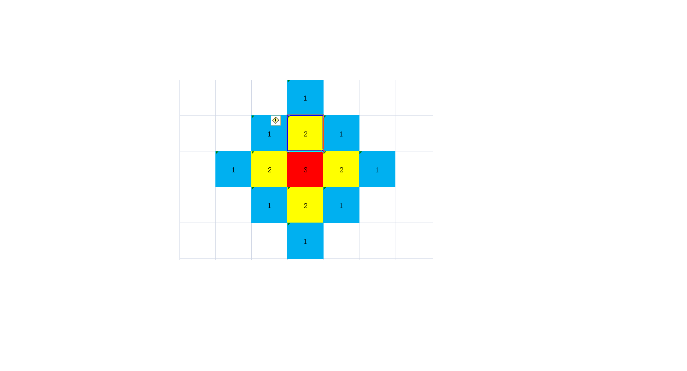

Input file: rts.in
Output file: rts.out
Time Limit : 2 seconds
Memory Limit: 512 megabytes
\(\text{HLY}\)在玩一个即时战略\(\text{(Real Time Strategy)}\)游戏。与大多数同类游戏类似，这个游戏的地图是平面的，并且玩家都有一个基地。
\(\text{HLY}\)的对手杰哥的基地是一个\(w \times h\)的矩形。其中矩形的每个格子都有一个建筑，每个建筑都有一个重要度。其中第\(i\)行第\(j\)列的格子中的建筑的重要度为\(w_{ij}\)。
\(\text{HLY}\)决定轰炸杰哥的基地。他可以选择杰哥基地的任何一个格子释放一个能量为\(p\)的炸弹。释放以后，这个格子的建筑会受到\(p\)的摧毁度。炸弹产生的冲击波可以向四个方向扩散，每扩散一格能量值会减少\(1\)。即释放位置相邻的\(4\)个格子会受到\(p − 1\)的摧毁度，再向外的\(8\)个格子会受到\(p − 2\)的摧毁度 ... 直到能量值减为 \(0\) ，形式化的讲，如果在第 \(x\) 行第 \(y\) 列释放炸弹，那么第 \(i\) 行第$ j$ 列的格子受到的摧毁度 $d_{ij} = max(0,p − (| x − i | + | y − j |)) $。
对于每个的格子，杰哥受到的损失即为这个格子的重要度与受到的摧毁度的乘积，即\(w_{ij} \times d_{ij}\)。
\(\text{HLY}\)想知道，对于每一种投放炸弹的方案，杰哥受到的最小总损失和最大总损失各为多少，形式化的讲，即为
\[\large \sum_{i=1}^{w}\sum_{j=1}^{h} w_{ij} \times d_{ij}\]
的最小值与最大值。
第\(1\)行三个整数\(w,h,p\)。
接下来\(w\)行，每行\(h\)个整数。从第\(2\)行开始第\(i\)行第\(j\)个整数表示\(w_{ij}\)。
一行两个数，表示杰哥受到的最小总损失和最大总损失，用空格隔开。
\(\texttt{input\#1}\)
3 4 3
9 9 9 1
9 9 1 1
9 1 1 1
\(\texttt{output\#1}\)
10 96
样例解释：
\(\text{HLY}\)在第\(2\)行第\(2\)列释放炸弹杰哥所受损失最大，为
\(9 \times 1 + 9 \times 2 + 9 \times 1 + 9 \times 2 + 9 \times 3 + 1 \times 2 + 1 \times 1 + 9 \times 1 + 1 \times 2 + 1 \times 1 = 96\)。
\(\text{HLY}\)在第\(3\)行第\(4\)列释放炸弹杰哥所受损失最小， 为
\(1\times1+1\times1+1\times2+1\times1+1\times2+1\times3 = 10\)。
对于\(100%\)的数据，\(1 \le n,m \le 400,1 \le p \le 200,0 \le w ij \le 10^5\)。
子任务\(1\)（\(10\)分） ：满足\(p= 1\)。
子任务\(2\)（\(30\)分） ：满足\(1 \le n,m \le 40\)。
子任务\(3\)（\(60\)分） ：没有特殊限制。
\(1 \le n,m \le 400\)模拟可过，不过需要点技巧——前缀和。

一个能量为\(3\)的炸弹产生的影响如上图。
很明显是\(3\)个菱形，我们计算每个菱形的边加到一起。
但暴力加明显过不了，所以使用前缀和，维护一个从左上到右下的前缀和以及一个从右上到坐下的前缀和（是一条线上的）。
具体看代码。
#include<iostream>
#include<cstring>
#include<string>
#include<cstdio>
#include<algorithm>
#define max(a,b) a>b?a:b
#define min(a,b) a<b?a:b
#define MAXN 2020
#define int long long
int w,h,p,ans1=0,ans2=1e18,map[MAXN][MAXN];
int sum1[MAXN][MAXN],sum2[MAXN][MAXN];
inline void read(int &T) {
int x=0;bool f=0;char c=getchar();
while(c<'0'||c>'9'){if(c=='-')f=!f;c=getchar();}
while(c>='0'&&c<='9'){x=x*10+c-'0';c=getchar();}
T=f?-x:x;
}
signed main() {
read(w),read(h),read(p);
w+=500,h+=500;//防止越界
for(int i=501;i<=w;++i) {
for(int j=501;j<=h;++j) {
read(map[i][j]);
}
}
for(int i=1;i<=2010;++i) {
for(int j=1;j<=2010;++j) {
sum1[i][j]=sum1[i-1][j-1]+map[i][j];
}
}//一个从左上到右下的前缀和
for(int i=1;i<=2010;++i) {
for(int j=2010;j>=1;--j) {
sum2[i][j]=sum2[i-1][j+1]+map[i][j];
}
}//一个从右上到左下的前缀和
for(int i=501;i<=w;++i) {
for(int j=501;j<=h;++j) {//枚举将炸弹放到哪一个点
int sum=p*map[i][j];
int x=p;
while(x>1) {
sum+=(p-x+1)*(sum1[i][j+x-1]-sum1[i-x][j-1]);
sum+=(p-x+1)*(sum1[i+x-1][j]-sum1[i-1][j-x]);
sum+=(p-x+1)*(sum2[i][j-x+1]-sum2[i-x][j+1]);
sum+=(p-x+1)*(sum2[i+x-1][j]-sum2[i-1][j+x]);
sum-=(p-x+1)*map[i-x+1][j];
sum-=(p-x+1)*map[i+x-1][j];
sum-=(p-x+1)*map[i][j-x+1];
sum-=(p-x+1)*map[i][j+x-1];
--x;
}//计算放到该点的摧毁度
ans1=max(ans1,sum);
ans2=min(ans2,sum);
}
}
std::cout<<ans2<<" "<<ans1<<'\n';
return 0;
}